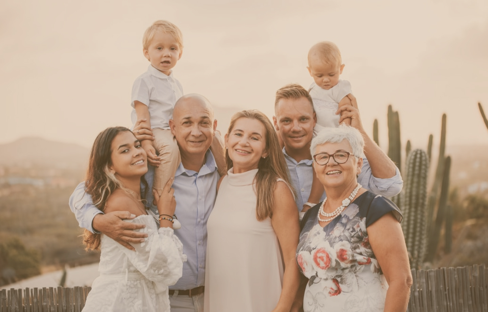
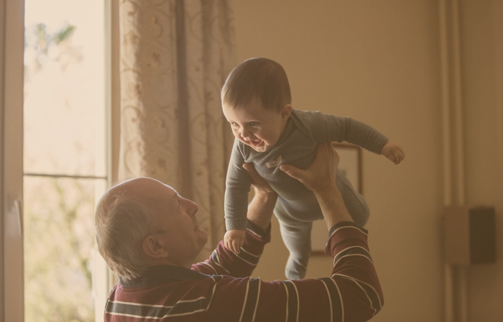

Добрый день, меня зовут Воронов Антон. Я автор проекта Семейные Ценности.
В прошлом году у нас умерла последняя бабушка и мы перестали быть внуками. От нее осталось
только небольшое видео, снятое на кухне без подготовки на телефон. Нет другой возможности
услышать ее голос, увидеть мимику, движения. Тогда я подумал, что от наших прабабушек остались
только воспоминания, от бабушек - несколько фотографий, от родителей - останутся пара
фотоальбомов.
Сейчас время развития технологий и мы можем позволить себе сохранить память о родных и близких
людях с качественной картинкой и звуком. Иметь возможность показать своим детям, какими были их
бабушки и дедушки, передать их мудрость, истории из жизни, сохранить главную семейнную ценность.
В проносящихся мимо секундах мы не замечаем, как проходят годы. А порой бывает так нужно
остановиться, набраться сил и вдохнуть спокойствия и уверенности.
Мы включаем запись и погружаемся в воспоминания. Видим родные глаза. Они светят нам теплом и
пониманием. Слышим родной голос и переносимся в детство. Там бабушка и дедушка, они знают много
сказочных историй и всегда поддерживают все наши увлечения. И папа большой, сильный и все-все
может. А мама молодая и самая красивая, и у нее такие добрые руки. Мир огромный и неизведанный,
но рядом со взрослыми ничего не страшно. И кажется, что жизнь становится проще и понятнее.
Но запись заканчивается, и мы снова взрослые. Это удивительно – иметь возможность настроить
связь со старшим поколением, зарядиться их мудростью, убедиться, что семья – это истинная
ценность.
Очень важно - дать возможность вашим детям, внукам и правнукам увидеть своих старших
родственников.
Наш фильм поможет им понять, что родословная – это не просто список имен, а настоящие люди с
лицом и характером. Это яркие личности, с которых можно брать пример. Ваши дети смогут увидеть
ценность каждого человека, научатся уважать и почитать старших, гордиться ими. Это поможет им
вобрать опыт старших поколений и вырасти сильными, успешными людьми. А осознание сплоченности и
принадлежности к большой семье даст им в будущем ощущение надежности и уверенности в себе.
Это неисчерпаемая тема мудрости. Люди прожившие жизнь, могут рассказать о своих взглядах и полученном опыте. Эти истории прошли проверку временем, они искренние и их очень интересно слушать. Я слушал истории своих бабушек, отца и многое помню, они стали частью меня. Но многое уже забыл, было бы просто замечательно иметь возможность услышать близких людей ещë раз. Это как пересмотреть любимый фильм, который хорошо знаешь, но к которому приятно возвращаться. В период самоизоляции, многие из нас вернулись к советской классике и в очередной раз пересмотрели золотой фонд нашего кино. Ритм жизни в те дни замедлился, появилась возможность и желание повидаться с родными - "Любовь и голуби", "Служебный роман", "Москва слезам не верит". Хорошо, что есть такая возможность, даже спустя года.
Семейная ценность — это самое дорогое, что есть у каждого из нас. Наши родные, близкие и любимые люди, к сожалению, не вечны. Рано или поздно они покидают нас, оставляя после себя лишь пару фотографий и бесконечное количество воспоминаний. Однако эти воспоминания имеют свойство гаснуть, стираться и теряться навсегда. В такие моменты больно осознавать, что с трудом вспоминаешь улыбку матери, добрые глаза бабушки или саркастические шутки отца. Сохранение этих моментов, запечатление на электронных носителях — это самая важная вещь, которую необходимо сделать пока живы наши родственники.
Качественная картинка и звук позволяют сохранить истории из жизни, передать мудрость поколений и познакомить будущих внуков и правнуков с их давно почившими родственниками. Мы делаем все возможное, чтобы Ваши семейные ценности навсегда остались в качестве семейной реликвии, передаваемой из поколения в поколение. Важно успеть сохранить теплые моменты из обычной жизни, пока живы те, кто нам так близок. Наша работа заключается в помощи всем желающим, тем, кто осознал всю важность сохранения семейных ценностей. Для этого мы используем только качественную аппаратуру, способную воссоздать идеальную картинку и звук.
